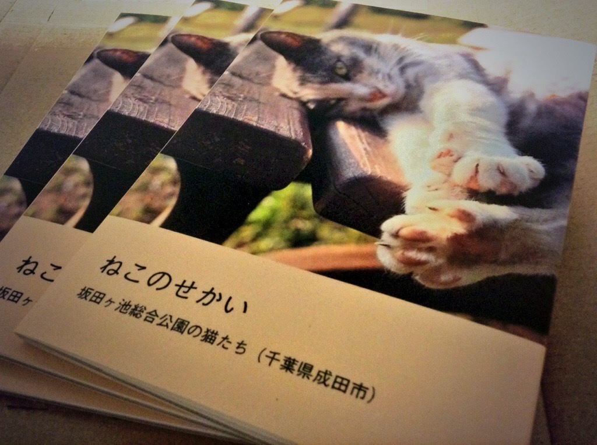

自らが立ち上げたプロジェクトチームで、ローコスト・短期集中での目標達成を掲げ、最大3名で構成されるチームを先導した。
サービス概要インターネットで誰もが情報発信をできる時代になったが、一方的な発信が多く、議論のできる場所は少ないことに危機感を覚えるとともに、インターネットのポテンシャルを活かしたい意志のもと立ち上がる。建設的に議論ができる場所、発言者の立場が見える場所をインターネット上に作ることを目指す。
平成30年11月3日,4日に筑波大学雙峰祭(芸術祭)の写真部写真展 場所：筑波大学5C棟513室にて、オリジナル写真集"reunion - 再会"を販売しました。
価格等の概要
A4 20ページ フルカラー
前ページ半光沢の写真用紙を使用
A4見開き全面印刷の写真を2枚含む全25枚
無料アプリ AsahiAR による追加画像及び映像コンテンツが閲覧可能（試験的）
50部限定印刷
内容
2014年から今年にかけて、私が全国各地で撮影した2万枚を超える写真の中から、風景・星景・猫にジャンルを絞り、25枚を厳選して掲載します。
webカタログ
販売ページ(booth)
学生主導のARアプリ開発チームで、クライアントとの調整、技術選定、進捗管理などを主体的に行った。
サービス概要AsahiARとは、紙媒体を始めとする現実世界のオブジェクトと、デジタルメディアを融合させる、"Augmented Reality (AR)"を使ったアプリケーションです。
•Asahi AR combines paper media and digital contents such as movies and 3d objects. Users can not only read the book, but also see additional movies and 3d objects and more. Our object and a goal of this project is to compensate weakness of print media by digital media and to tell people about goodness of printing matter. With the widespread use of digital media, the number of print media is decreasing. However, there are strengths as the shapes of the book and the wonderful color expression. On the other hand, there are features that only be found in digital media such as videos, 3D interactive models.
自らが立ち上げたプロジェクトチームで、他の学類も含め最大5名の筑波大生を集め、共通認識の構築や技術的なアシストを行いつつ、ウェブサービスの作成を行った。
自身初の初のフォトブック。テーマを猫に絞り、ひたすら猫の写真を載せまくった一冊。
